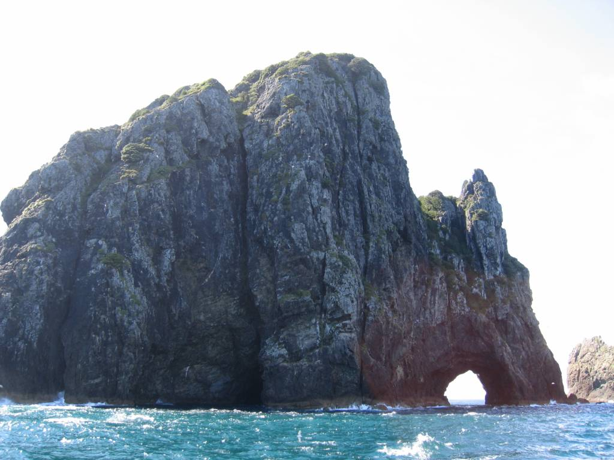
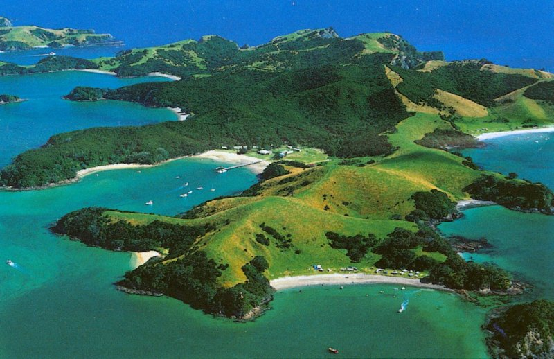

1. Залив островов, Северный остров, НЗ
Залив островов представляет собой обширную бухту с множеством небольших островков, покрытых зеленым кустарником и деревьями. Береговая линия острова Северный в этом районе изрезана маленькими лагунами. Природа создала здесь удивительной красоты ландшафт. Залив островов пользуется большой популярностью среди яхтсменов и любителей водных видов спорта. Здесь созданы прекрасные условия для дайвинга и катания на лодках. Любители рыбалки также останутся довольны: в здешних водах водится множество видов рыб. Говорят, зимой, если отплыть подальше от берега, здесь можно увидеть китов и марлинов.

